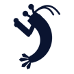
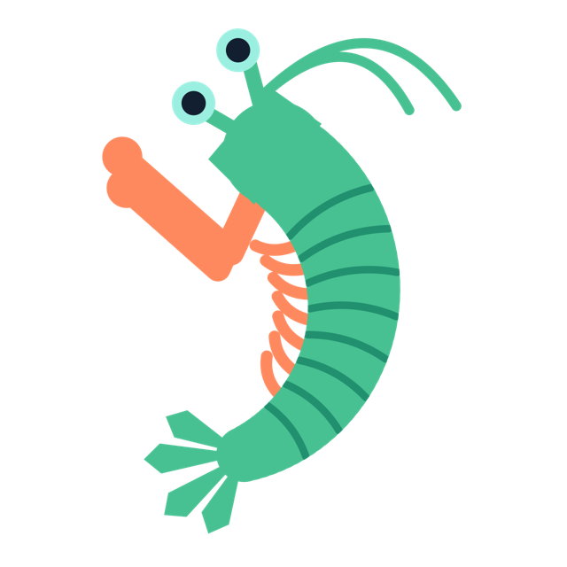

Fig. 1 · The desk shrimp
Don't be a shrimp.
A quiet menu bar app that watches your posture through the Mac camera and nudges you when it slips.
Fig. 2 · What it catches
Seven ways to shrimp
Measured against your own calibrated baseline. Distance to the camera does not matter.
Side view · the faded outline is your baseline
Head
Shoulders
Body
Fig. 3 · Calibrate
Sit well once. It remembers.
Choose Calibrate while sitting well, and the app saves your good posture as the baseline. Everything is measured against it, so distance to the camera does not matter.
Everything runs on your Mac. No frames are stored or sent anywhere.
How it nudges
A nudge, not a nag
- 10 s
An issue counts after 10 seconds and clears 2 seconds after you fix it.
- 1 min
One minute of bad posture within three minutes shows an orange banner. Click it to snooze for 5 minutes.
- 50 min
After 50 minutes without a 2 minute break, a banner asks you to stand up.

Posture is good- Posture is off
- Nobody is in frame
The camera runs at its lowest frame rate and posture is checked twice per second, less when nobody is there or Low Power Mode is on. It stops while the screen is asleep or locked.
Install
Two lines in Terminal
brew install veelenga/tap/mantis-shrimp
brew services start mantis-shrimpAllow camera access on first launch, then choose Calibrate while sitting well.
Prefer a DMG? Download the latest release. The app is not notarized, so macOS blocks the first launch. Open System Settings, Privacy & Security, and click Open Anyway.
